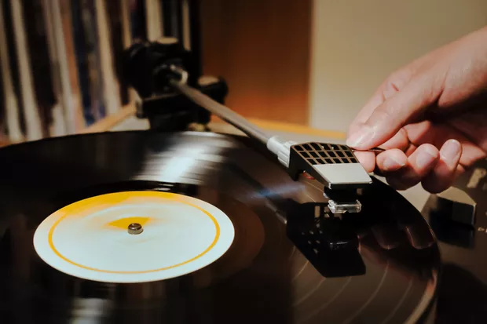

<div class="geral" style="flex: 1;">
    <div class="container-fluid text-center" style="background-color:rgb(146, 213, 213)">
        <div class="table" style="background-color:rgb(146, 213, 213)">
            <div class="row" style="background-color:rgb(146, 213, 213)">
                <div class="col-sm-5 col-md-8 d-flex align-items-center">
                    <p class="text-justify" style="background-color:rgb(146, 213, 213)">
                        É com imenso prazer, apresentamos nossa estabelecimento, a Dina Discos, uma loja que se dedica à venda de discos de vinil e que encarna a paixão atemporal pela música em sua forma mais pura e tangível.
                        Localizada no coração da cidade, a Dina Discos é um refúgio para os amantes da música, colecionadores, e todos aqueles que valorizam a riqueza e a autenticidade do som analógico. 
                        Nosso catálogo abrange uma ampla gama de gêneros musicais, desde os clássicos intemporais até as últimas novidades em vinil.   
                        <br><br>
                        Trabalhamos incessantemente para garantir que tenhamos uma seleção diversificada que satisfaça os gostos mais ecléticos.
                        Na Dina Discos, a qualidade é nossa prioridade. Cada disco de vinil em nosso estoque é escolhido a dedo, inspecionado minuciosamente e mantido em condições ideais para garantir uma experiência auditiva excepcional. Valorizamos a história por trás de cada álbum e estamos comprometidos em oferecer aos nossos clientes um pedaço tangível da herança musical. 
                        <br><br>
                        Além disso, nossa loja oferece um ambiente acolhedor e nostálgico, onde os amantes da música podem folhear, explorar e conversar sobre sua paixão compartilhada. Nossa equipe está pronta para oferecer recomendações personalizadas, fornecer informações sobre os artistas e álbuns e ajudar os clientes a encontrar aquela peça especial que estão buscando.
                        Na Vinilaria Clássica, a música é mais do que um produto; é uma forma de arte que merece ser celebrada. Convidamos você a explorar nosso acervo, descobrir novos sons e reviver memórias musicais de tempos passados. Seja você um aficionado experiente ou um novato na experiência do vinil, esperamos recebê-lo em nossa loja para compartilhar a magia da música em sua forma mais autêntica e cativante.
                    </p>          
                </div>
                <div class="col-sm-5 col-md-4 d-flex align-items-center">
                    <div class="imag1 text-center" style="background-color:rgb(146, 213, 213)">
                        <div class="Titulo">
                            <p class="paragrafo2">
                            <h4>Faça A Sua Compra Agora Conosco!!!</h4>
                        </div>
                        <div class="imag1 img-fluid">
                            
                        </div>
                    </div>
                </div>
            </div>   
        </div>
    </div>
</div>


